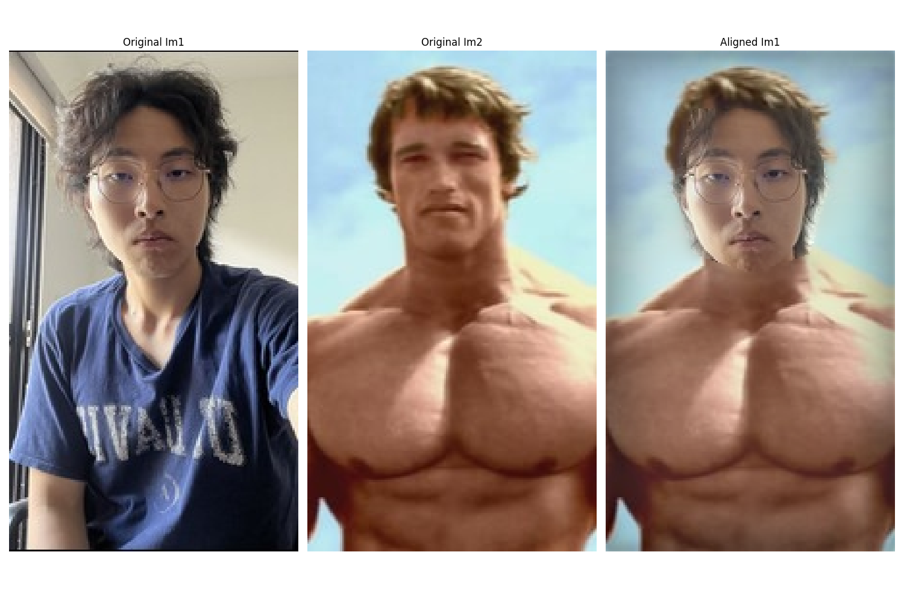
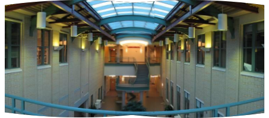
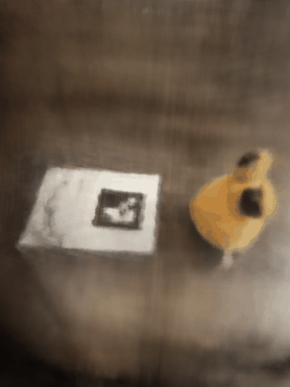
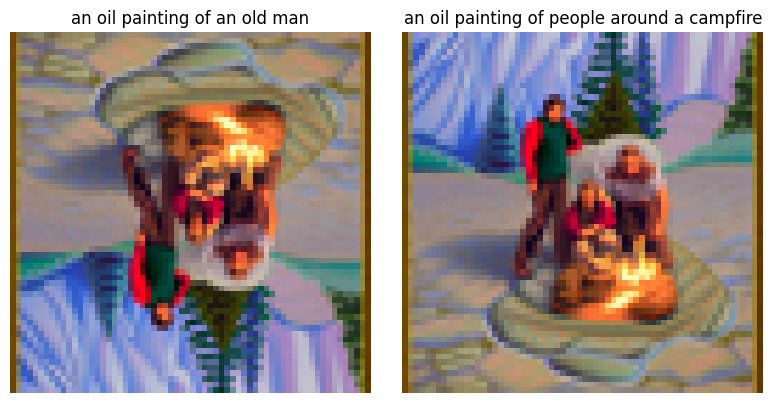

Joshua Sun
CS 280A: Computer Vision — UC Berkeley

Project 1
Prokudin-Gorskii Colorizing
Automatic color image recovery from digitized glass plate photographs using multi-scale pyramid search technique.
View Project →

Project 2
Fun with Filters & Frequencies
Explore edge detection, image sharpening, hybrid images, and multiresolution blending using Laplacian stacks.
View Project →

Project 3
Image Mosaicing
Manual and automatic image stitching using homography estimation, feature detection, and RANSAC for robust alignment.
View Project →

Project 4
Neural Radiance Fields
3D scene reconstruction from multi-view images using machine learning, positional encoding, and volumetric rendering techniques.
View Project →

Project 5
Diffusion Models & Generative AI
Explore diffusion models for image generation, editing, and synthesis including text-to-image and visual anagrams.
View Project →